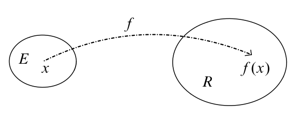
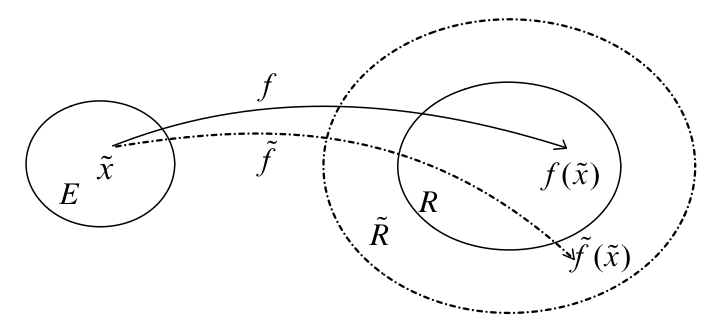

[1] 1.02[1] 16384Fortgeschrittene mathematische Methoden in der Statistik
fabian.scheipl@lmu.de)\[ \definecolor{fmmgreen}{RGB}{0,158,115} \definecolor{fmmblue}{RGB}{0,114,178} \definecolor{fmmred}{RGB}{213,94,0} \definecolor{fmmorange}{RGB}{230,159,0} \definecolor{fmmpurple}{RGB}{158,87,213} \newcommand{\ind}{\unicode{x1D7D9}} \newcommand{\R}{{\mathbb{R}}} \newcommand{\N}{{\mathbb{N}}} \newcommand{\Q}{{\mathbb{Q}}} \newcommand{\C}{\mathbb{C}} \newcommand{\P}{\mathbb{P}} \newcommand{\Z}{{\mathbb{Z}}} \newcommand{\E}{{\mathbb{E}}} \newcommand{\K}{{\mathbb{K}}} \newcommand{\L}{\mathbb{L}} \newcommand{\F}{{\mathbb{F}}} \newcommand{\G}{\mathbb{G}} \newcommand{\S}{\mathbb{S}} \newcommand{\D}{{\mathbb{D}}} \newcommand{\bnull}{{\boldsymbol{0}}} \newcommand{\bzero}{{\boldsymbol{0}}} \newcommand{\ba}{{\boldsymbol{a}}} \newcommand{\bb}{{\boldsymbol{b}}} \newcommand{\bc}{{\boldsymbol{c}}} \newcommand{\bd}{{\boldsymbol{d}}} \newcommand{\be}{{\boldsymbol{e}}} \newcommand{\bg}{{\boldsymbol{g}}} \newcommand{\bh}{{\boldsymbol{h}}} \newcommand{\bi}{{\boldsymbol{i}}} \newcommand{\bj}{{\boldsymbol{j}}} \newcommand{\bk}{{\boldsymbol{k}}} \newcommand{\bl}{{\boldsymbol{l}}} \newcommand{\bn}{{\boldsymbol{n}}} \newcommand{\bo}{{\boldsymbol{o}}} \newcommand{\bp}{{\boldsymbol{p}}} \newcommand{\bq}{{\boldsymbol{q}}} \newcommand{\br}{{\boldsymbol{r}}} \newcommand{\bs}{{\boldsymbol{s}}} \newcommand{\bt}{{\boldsymbol{t}}} \newcommand{\bu}{{\boldsymbol{u}}} \newcommand{\bv}{{\boldsymbol{v}}} \newcommand{\bw}{{\boldsymbol{w}}} \newcommand{\bx}{{\boldsymbol{x}}} \newcommand{\by}{{\boldsymbol{y}}} \newcommand{\bz}{{\boldsymbol{z}}} \newcommand{\bA}{{\boldsymbol{A}}} \newcommand{\bB}{{\boldsymbol{B}}} \newcommand{\bC}{{\boldsymbol{C}}} \newcommand{\bD}{{\boldsymbol{D}}} \newcommand{\bE}{{\boldsymbol{E}}} \newcommand{\bF}{{\boldsymbol{F}}} \newcommand{\bG}{{\boldsymbol{G}}} \newcommand{\bH}{{\boldsymbol{H}}} \newcommand{\bI}{{\boldsymbol{I}}} \newcommand{\bJ}{{\boldsymbol{J}}} \newcommand{\bK}{{\boldsymbol{K}}} \newcommand{\bL}{{\boldsymbol{L}}} \newcommand{\bM}{{\boldsymbol{M}}} \newcommand{\bN}{{\boldsymbol{N}}} \newcommand{\bO}{{\boldsymbol{O}}} \newcommand{\bP}{{\boldsymbol{P}}} \newcommand{\bQ}{{\boldsymbol{Q}}} \newcommand{\bR}{{\boldsymbol{R}}} \newcommand{\bS}{{\boldsymbol{S}}} \newcommand{\bT}{{\boldsymbol{T}}} \newcommand{\bU}{{\boldsymbol{U}}} \newcommand{\bV}{{\boldsymbol{V}}} \newcommand{\bW}{{\boldsymbol{W}}} \newcommand{\bX}{{\boldsymbol{X}}} \newcommand{\bY}{{\boldsymbol{Y}}} \newcommand{\bZ}{{\boldsymbol{Z}}} \newcommand{\tagqed}{\tag*{$\blacksquare$}} \newcommand{\Acal}{{\mathcal{A}}} \newcommand{\Bcal}{{\mathcal{B}}} \newcommand{\Ccal}{{\mathcal{C}}} \newcommand{\Dcal}{{\mathcal{D}}} \newcommand{\Ecal}{{\mathcal{E}}} \newcommand{\Fcal}{{\mathcal{F}}} \newcommand{\Gcal}{{\mathcal{G}}} \newcommand{\Hcal}{{\mathcal{H}}} \newcommand{\Ical}{{\mathcal{I}}} \newcommand{\Jcal}{{\mathcal{J}}} \newcommand{\Kcal}{{\mathcal{K}}} \newcommand{\Lcal}{{\mathcal{L}}} \newcommand{\Mcal}{{\mathcal{M}}} \newcommand{\Ncal}{{\mathcal{N}}} \newcommand{\Ocal}{{\mathcal{O}}} \newcommand{\Pcal}{{\mathcal{P}}} \newcommand{\Qcal}{{\mathcal{Q}}} \newcommand{\Rcal}{{\mathcal{R}}} \newcommand{\Scal}{{\mathcal{S}}} \newcommand{\Tcal}{{\mathcal{T}}} \newcommand{\Ucal}{{\mathcal{U}}} \newcommand{\Vcal}{{\mathcal{V}}} \newcommand{\Wcal}{{\mathcal{W}}} \newcommand{\Xcal}{{\mathcal{X}}} \newcommand{\Ycal}{{\mathcal{Y}}} \newcommand{\Zcal}{{\mathcal{Z}}} \newcommand{\eps}{{\varepsilon}} \newcommand{\beps}{{\boldsymbol{\epsilon}}} \newcommand{\balpha}{{\boldsymbol{\alpha}}} \newcommand{\bbeta}{{\boldsymbol{\beta}}} \newcommand{\bchi}{{\boldsymbol{\chi}}} \newcommand{\bdelta}{{\boldsymbol{\delta}}} \newcommand{\bDelta}{{\boldsymbol{\Delta}}} \newcommand{\bepsilon}{{\boldsymbol{\epsilon}}} \newcommand{\bphi}{{\boldsymbol{\phi}}} \newcommand{\bgamma}{{\boldsymbol{\gamma}}} \newcommand{\betah}{{\boldsymbol{\eta}}} \newcommand{\btheta}{{\boldsymbol{\theta}}} \newcommand{\biota}{{\boldsymbol{\iota}}} \newcommand{\bkappa}{{\boldsymbol{\kappa}}} \newcommand{\blambda}{{\boldsymbol{\lambda}}} \newcommand{\bLambda}{{\boldsymbol{\Lambda}}} \newcommand{\bmu}{{\boldsymbol{\mu}}} \newcommand{\bnu}{{\boldsymbol{\nu}}} \newcommand{\bomikron}{{\boldsymbol{\omicron}}} \newcommand{\bpi}{{\boldsymbol{\pi}}} \newcommand{\bSigma}{{\boldsymbol{\Sigma}}} \newcommand{\bxi}{{\boldsymbol{\xi}}} \newcommand{\bzeta}{{\boldsymbol{\zeta}}} \newcommand{\bomega}{{\boldsymbol{\omega}}} \newcommand{\equivto}{{\Leftrightarrow}} \newcommand{\quequiv}{{\quad \equivto \quad}} \newcommand{\impl}{{\implies}} \newcommand{\quimpl}{{\quad \implies \quad}} \newcommand{\implby}{{\impliedby}} \newcommand{\notimplies}{\not\implies} \newcommand{\tr}{{\operatorname{tr}}} \newcommand{\spann}{{\operatorname{span}}} \newcommand{\col}{{\operatorname{col}}} \newcommand{\rang}{{\operatorname{rang}}} \newcommand{\diag}{{\operatorname{diag}}} \newcommand{\vec}{\operatorname{vec}} \newcommand{\pinv}{{^{+}}} \newcommand{\kron}{\mathbin{\otimes_{\mathrm{K}}}} \newcommand{\sign}{{\operatorname{sign}}} \newcommand{\la}{{\langle}} \newcommand{\ra}{{\rangle}} \newcommand{\inner}[1]{{\langle #1 \rangle}} \newcommand{\proj}{{\operatorname{proj}}} \newcommand{\bar}{\overline} \newcommand{\vol}{{\operatorname{vol}}} \newcommand{\dx}{{\, \mathrm{d}x}} \newcommand{\ol}{{\overline}} \newcommand{\argmax}{\mathop{\mathrm{arg\,max}}} \newcommand{\argmin}{\mathop{\mathrm{arg\,min}}} \newcommand{\conv}{\mathop{\mathrm{conv}}} \newcommand{\epi}{\mathop{\mathrm{epi}}} \newcommand{\interior}{\mathop{\mathrm{int}}} \newcommand{\Pr}{\mathbb{P}} \newcommand{\var}{{\mathbb{V}\mathrm{ar}}} \newcommand{\bias}{{\operatorname{bias}}} \newcommand{\abias}{{\mathrm{ABias}}} \newcommand{\AMSE}{{\mathrm{AMSE}}} \newcommand{\AMISE}{{\mathrm{AMISE}}} \newcommand{\cov}{{\mathbb{C}\mathrm{ov}}} \newcommand{\corr}{{\mathrm{Corr}}} \newcommand{\ov}{{\overline}} \newcommand{\wh}[1]{{\widehat{#1}}} \newcommand{\wt}[1]{{\widetilde{#1}}} \newcommand{\tod}{{\stackrel{d}{\to}}} \newcommand{\sumin}{{\sum_{i = 1}^n}} \newcommand{\sumjn}{{\sum_{j = 1}^n}} \newcommand{\KL}{{\operatorname{KL}}} \newcommand{\softmax}{{\operatorname{SoftMax}}} \newcommand{\layernorm}{{\operatorname{LayerNorm}}} \newcommand{\avg}{{\operatorname{avg}}} \newcommand{\relu}{{\operatorname{ReLu}}} \newcommand{\VC}{{\operatorname{VC}}} \newcommand{\indep}{{\perp \!\!\! \perp}} \newcommand{\unif}{{\operatorname{Unif}}} \newcommand{\bern}{{\operatorname{Bernoulli}}} \newcommand{\binomial}{{\operatorname{Binomial}}} \newcommand{\MSE}{{\operatorname{MSE}}} \newcommand{\iid}{\textit{iid}\;} \newcommand{\IF}{{\operatorname{IF} }} \newcommand{\BIC}{{\operatorname{BIC}}} \newcommand{\AIC}{{\operatorname{AIC}}} \newcommand{\IC}{{\operatorname{IC}}} \newcommand{\expl}[1]{{\tag*{[#1]}}} \newcommand{\cb}[1]{\textbf{#1}} \newcommand{\cbgreen}[1]{\textcolor{fmmgreen}{\textbf{#1}}} \newcommand{\cbred}[1]{\textcolor{fmmred}{\textbf{#1}}} \newcommand{\cbpurp}[1]{\textcolor{fmmpurple}{\textbf{#1}}} \newcommand{\cborange}[1]{\textcolor{fmmorange}{\textbf{#1}}} \newcommand{\corange}[1]{{\textcolor{fmmorange}{#1}}} \newcommand{\cblue}[1]{{\textcolor{fmmblue}{#1}}} \newcommand{\cgreen}[1]{{\textcolor{fmmgreen}{#1}}} \newcommand{\cred}[1]{{\textcolor{fmmred}{#1}}} \newcommand{\cpurp}[1]{{\textcolor{fmmpurple}{#1}}} \newcommand{\symbf}[1]{\boldsymbol{#1}} \]
Algorithmuskonzept
Komplexitätsanalyse
Verständnis, dass Algorithmen (meist) approximative Lösungen berechnen
Lineare Algebra I
Analysis I
Def.: Fehlermaß
Sei \(V\) ein Vektorraum mit (Semi-)Norm \(\| \cdot \|\) und \(\wt \bv \in V\) eine Approximation zu \(\bv \in V\). Dann ist
Lemma: Fehlerschranken
Es gilt \[\begin{align*} \|\bz \| (1 - \delta_{\bz}) \le \|\wt \bz\| \le \|\bz\|(1 + \delta_{\bz}). \end{align*}\]
Beweis:
\[\begin{align*} \delta_{\bz} &= \frac{\|\wt \bz - \bz\|}{\|\bz\|} \\ \cgreen{\|\wt \bz - \bz\|} &= \cblue{\delta_{\bz} \| \bz\|} \\ \cgreen{| \|\wt \bz\| - \|\bz\| |} &\le \cblue{\delta_{\bz} \| \bz\|} \tag*{[umgekehrte Dreiecksungl.]}\\ -\cblue{\delta_{\bz} \| \bz\|} &\le \cgreen{\|\wt \bz\| - \|\bz\|} \le \cblue{\delta_{\bz} \| \bz\|} \tag*{[Definition von Betrag]}\\ \|\bz\| -\delta_{\bz} \| \bz\| &\le \|\wt \bz\| \le \|\bz\| + \delta_{\bz} \| \bz\| . \tag*{$\blacksquare$} \end{align*}\]
Sei \(\bv = \begin{pmatrix} 3 \\ 4 \end{pmatrix}\) und \(\wt \bv = \begin{pmatrix} 3.2 \\ 4.3 \end{pmatrix}\) mit der Euklidischen Norm \(\|\cdot\|_2\).
Absoluter Fehler: \[\begin{align*} \bDelta_{\bv} = \wt \bv - \bv = \begin{pmatrix} 3.2 \\ 4.3 \end{pmatrix} - \begin{pmatrix} 3 \\ 4 \end{pmatrix} = \begin{pmatrix} 0.2 \\ 0.3 \end{pmatrix} \end{align*}\]
Norm des absoluten Fehlers: \[\begin{align*} \|\bDelta_{\bv}\|_2 = \sqrt{0.2^2 + 0.3^2} = \sqrt{0.04 + 0.09} = \sqrt{0.13} \approx 0.361 \end{align*}\]
Relativer Fehler: \[\begin{align*} \delta_{\bv} = \frac{\|\bDelta_{\bv}\|_2}{\|\bv\|_2} = \frac{\sqrt{0.13}}{\sqrt{3^2 + 4^2}} = \frac{\sqrt{0.13}}{5} \approx \frac{0.361}{5} \approx 0.072 = 7.2\% \end{align*}\]
Fehlerschranke: Mit \(\eps = 0.1\) gilt \(\delta_{\bv} \approx 0.072 < 0.1\), also ist \(\eps = 0.1\) eine relative Fehlerschranke.
\[\begin{align*} \mbox{Gesamtfehler} &= \qquad \wt f(\wt \bx) - f(\bx) \\ &= \underbrace{\wt f(\wt \bx) - f(\wt \bx)}_{\substack{\mbox{Fehler im Algorithmus}\\(\text{Maschinenarithmetik})}} \quad + \quad \underbrace{f(\wt \bx) - f(\bx)}_{\substack{\mbox{Folgefehler aus Input}\\(\text{exakte Arithmetik})}} \end{align*}\]
Erster Term misst nur den Fehler des Algorithmus (bei gegebenem/fixen Input), nicht den Inputfehler.
Ist er “klein”, nennen wir den Algorithmus \(\wt f\) stabil.
Zweiter Term hängt nicht vom Algorithmus \(\wt f\) ab.
Ist er “klein”, nennen wir das Problem \(f\) an der Stelle \(\bx\) gut konditioniert.
Zerlege den Gesamtfehler in die zwei erwähnten Teile.
Lösung: \[\begin{align*} \wt f(3) - f(\pi) &= \cgreen{\bigl[\wt f(3) - f(3)\bigr]} + \cblue{\bigl[f(3) - f(\pi)\bigr]} \\ &= \cgreen{\text{Fehler im Algorithmus}} + \cblue{\text{Folgefehler aus Input}} \\ &= \cgreen{\biggl[-\sum_{n = 3}^\infty 3^n/n! \biggr]} + \cblue{\bigl[e^3 - e^\pi\bigr]} \\ &\approx \cgreen{\left[\left(1 + \tfrac{3}{1} + \tfrac{9}{2}\right) - e^3\right]} + \cblue{[20.1 - 23.1]} \\ &\approx \cgreen{[-11.6]} + \cblue{[-3]} \\ \end{align*}\]

Beispiel:
Achtung:
Die Störung ist hier relativ zu \(x\) nicht klein (bis zu 100%).
Bei relativ kleinen Störungen ist \(x \mapsto 1/x\) dagegen harmlos: der relative Outputfehler ist dann ungefähr so groß wie der relative Inputfehler.
Es kommt also darauf an, welche Art von Inputfehler unvermeidbar ist.
Def.: Konditionszahl
Sei \(f\) ein Problem mit Input \(\bx\).
\[\begin{align*} \| f(\wt \bx) - f(\bx) \| \le \kappa_{abs} \| \wt \bx - \bx \|, \quad \frac{\| f(\wt \bx) - f(\bx) \|}{\|f(\bx)\|} \le \kappa_{rel} \frac{\| \wt \bx - \bx \|}{\|\bx\|}. \end{align*}\]
Sei \[\begin{align*} \bA = \begin{pmatrix} 2 & 0 & 0 \\ 0 & 5 & 0 \\ 0 & 0 & 0.1 \end{pmatrix}. \end{align*}\] Was ist die Konditionszahl der Matrix bezüglich der 2-Norm?
Sei \(f(\bx) = x_1 + x_2 = {1 \choose 1}^\top \bx = \symbf{1}^\top \bx\).
Lösung:

\[\begin{align*} \mbox{Gesamtfehler} & = \qquad \wt f(\wt \bx) - f(\bx) \\ & = \underbrace{\wt f(\wt \bx) - f(\wt \bx)}_{\mbox{Fehler im Algorithmus}} \quad + \quad \underbrace{f(\wt \bx) - f(\bx)}_{\mbox{Folgefehler aus Input}} \end{align*}\]
Optimierung der Verlustfunktion \(L(\theta)\) mit \(\theta_{k+1} = \theta_k - \alpha \hat\nabla L(\theta_k)\)
Stabiler Algorithmus:
Instabiler Algorithmus:
Das ist eine Analogie zum Konzept der Stabilität — hier mischen sich numerische Fehler und die Konvergenzdynamik des Verfahrens:
Theorem: Stabilität zusammengesetzter Algorithmen
Sei \(f\) ein Problem mit Input \(\bx\), wobei \(f(\bx) = (h \circ g)(\bx)\) für zwei Teilprobleme \(g\) und \(h\). Dann gilt für einen Algorithmus \(\wt f = \wt h \circ \wt g\): \[\begin{align*} \frac{\|\wt f(\bx) - f(\bx)\|}{\|f(\bx)\|} \le \frac{\|\wt h(\wt \by) - h(\wt \by)\|}{\|h(\by)\|} + \kappa_{rel}(h, g(\bx)) \frac{\|\wt g(\bx) - g(\bx)\|}{\|g(\bx)\|}, \end{align*}\] wobei \(\by = g(\bx)\), \(\wt \by = \wt g(\bx)\).
Beweis: \[\begin{align*} \frac{\|\wt f(\bx) - f(\bx)\|}{\|f(\bx)\|} & = \frac{\|\wt h(\wt g(\bx)) - h(g(\bx))\|}{\|h(g(\bx))\|} \\ & = \frac{\|\cgreen{\wt h(\wt g(\bx)) - h(\wt g(\bx))} + \cblue{h(\wt g(\bx)) - h(g(\bx))}\|}{\|h(g(\bx))\|} \\ & \le \frac{\|\cgreen{\wt h(\wt g(\bx)) - h(\wt g(\bx))}\|}{\|h(g(\bx))\|} + \frac{\| \cblue{h(\wt g(\bx)) - h(g(\bx))}\|}{\|h(g(\bx))\|} \\ & \le \frac{\|\cgreen{\wt h(\wt \by) - h(\wt \by)}\|}{\|h(\by)\|} + \cblue{\kappa_{rel}(h, g(\bx)) \frac{\|\wt g(\bx) - g(\bx)\|}{\|g(\bx)\|}}. \end{align*}\]
\(\cgreen{\text{Fehler von } \wt h \text{ selbst}}\) + \(\cblue{\text{durch } h \text{ verstärkter Fehler von } \wt g}\) —
Idee: Einfügen von \(0 = -h(\wt g(\bx)) + h(\wt g(\bx))\), dann Dreiecksungleichung.
Problem: Berechne Stichprobenvarianz \[\begin{equation*} f(\bx) = \frac{1}{n} \sum_{i = 1}^n (x_i - \overline x)^2. \end{equation*}\]
Algorithmen: \[\begin{align*} \wt f_1(\bx) = \frac 1 {n} \sum_{i = 1}^n \left(x_i - \overline x\right)^2, \quad \wt f_2(\bx) = \left(\frac 1 {n} \sum_{i = 1}^n x_i^2\right) - {\overline x}^2 \end{align*}\]
Heute gelernt
Nächste Vorlesung